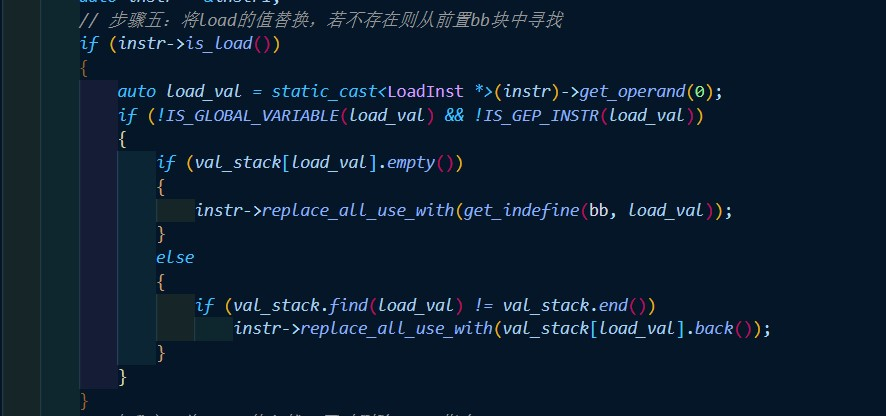
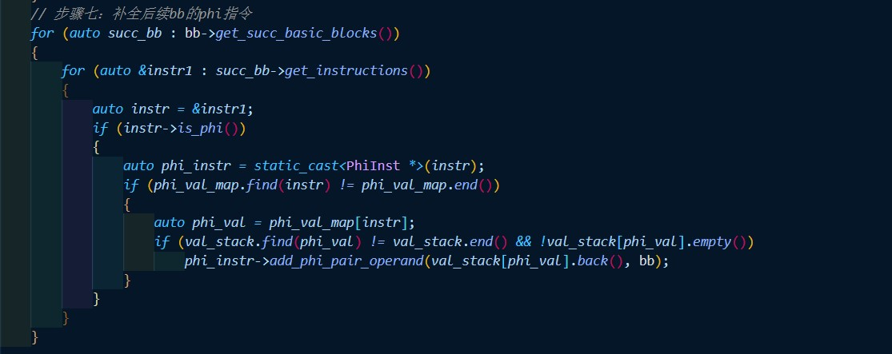
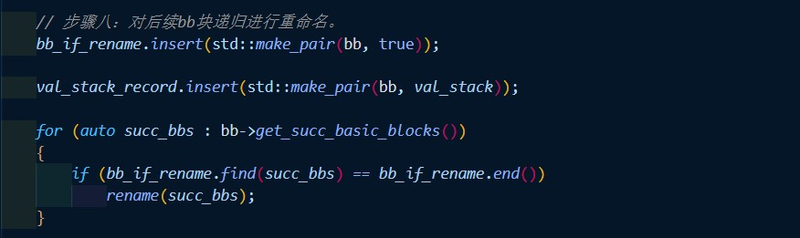
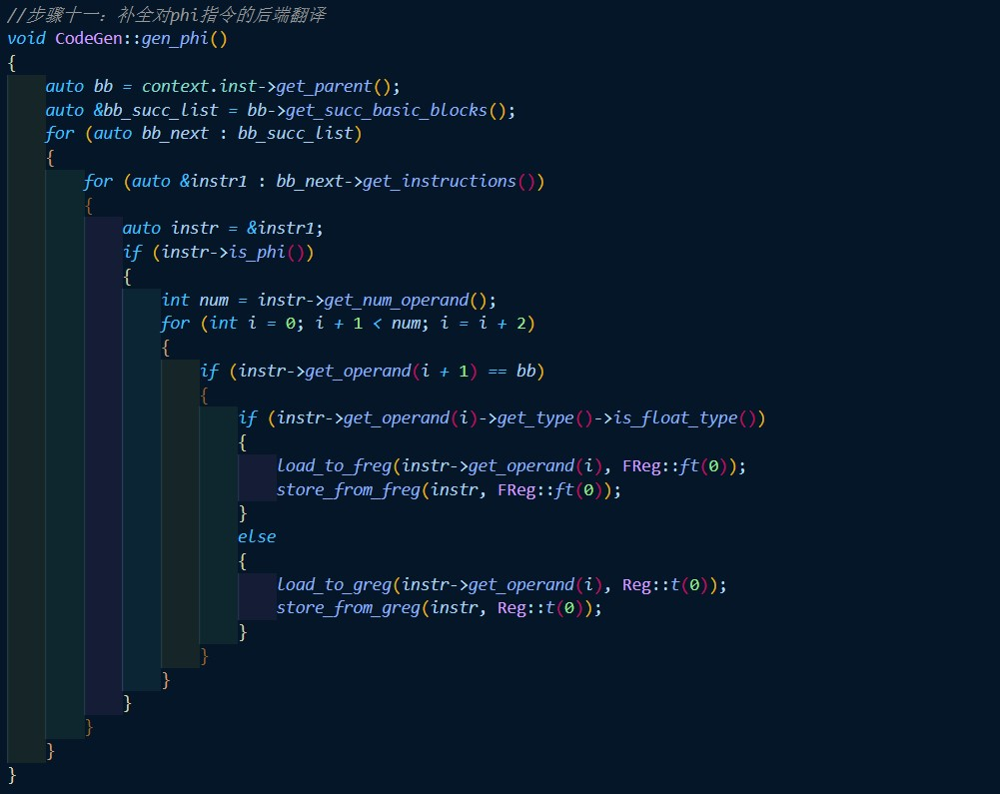

-
步骤零：找到每个函数中，每个bb块的控制边界。
bb块的控制边界是指该bb块的后续bb块中，有多个前置bb块的bb块。因此对于此类bb块，
控制流来自不同的bb块，因此需要在这些bb块的开头插入phi指令，实现变量的正确赋值。
我们对每个函数遍历所有bb块，对于前置bb块数量大于1的bb块，将其加入每个前置bb块的
控制边界即可。实现代码如下：

-
步骤一：找到活跃在多个bb块的全局名字集合，以及它们所属的bb块。
“全局名字”的意思并非是指全局变量，而是在某个函数中出现在多个bb块的alloca指令。对
于这些alloca值，在不同bb块中取不同的值，需要设置栈存放值，以及可能需要phi函数。我
我们对每个函数遍历所有的bb块，如果是alloca指令，则将其加入全局名字集合，并为改名字
设置所属bb块集合，如果后续bb块中出现了该名字，则将该bb块加入其所属bb块集合。实现代
码如下:

-
步骤二：通过支配边界信息，在对应位置插入phi指令。
对于每个函数，遍历活跃在多个bb块的全局名字集合的所属bb块，在其支配边界的开头插入对
应全局名字的phi指令。同时注意，插入phi指令后，该支配边界也成为的全局名字所属bb块，
因此对其进行同样的操作。实现代码如下：

-
步骤三：判断是否需要回溯。
由于对bb块递归进行重命名，可能出现某bb块中全局名字值是来自其他bb块，但该bb块还没有
进行重命名或者其栈值已经被弹出。因此我们记录下每个bb块退出重命名时的栈情况，对于当前
bb块的load指令，如果其对应栈为空，那么则遍历前置bb块的栈，如果找不到load指令对应的值
，则需要回溯，先对其他bb块进行重命名。实现代码如下：

-
步骤四：用phi指令值替换进入栈图中对应的val栈。
将phi指令值push入对应val值的栈即可。实现代码如下：

-
步骤五：将load的值替换，若不存在则从前置bb块中寻找。
将所有load指令值替换成对应栈顶值，如果栈空，那么从前置bb块的栈中寻找。实现代码如下：

-
步骤六：将store值入栈，同时删除store指令。
将store指令值push入对应val值的栈即可，实现代码如下：

-
步骤七：补全后续bb块的phi指令。
对当前bb块重命名结束之后，再遍历后续bb块，如果存在phi指令，说明后续bb块对应phi指令值
的一个来源是当前bb块，在步骤二中已经设定。因此将对应phi指令值的栈顶值插入phi指令即可。
实现代码如下：

-
步骤八：对后续bb块递归进行重命名。
每次重命名完bb块后，记录其命名情况，已经命名或者没有命名。对于后续没有命名的bb块依次进
重命名。实现代码如下：

-
步骤九：结束当前bb块重命名，弹出栈值。
结束当前bb块重命名后，由于要回到控制流到达该bb块之前的情况，因此遍历bb块的指令，将其对
所有val指的栈的修改还原，弹出push入的栈值。实现代码如下：

-
步骤十：删除store指令
删除当前bb块的store指令，Deadcode会将对应的load和alloca死代码删除。实现代码如下：

-
步骤十一：补全对phi指令的后端翻译
后端应该可以将phi指令翻译成对应汇编语言。若在遍历到phi指令时直接翻译，困难较大，因为寻
找前置bb块难度较大，而且此时对应val值也可能改变。因此我们变换思路，在个bb块翻译结束后，
对后继bb块遍历，如果存在phi指令，那么说明后续bb块的phi指令值来自当前bb块，因此将后续bb块
所需val值赋给其phi指令值。实现代码如下：
